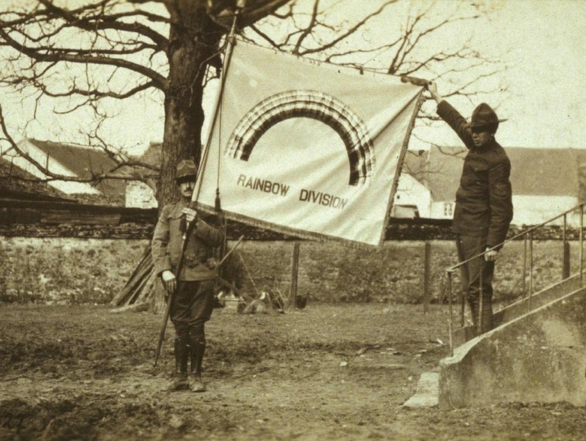
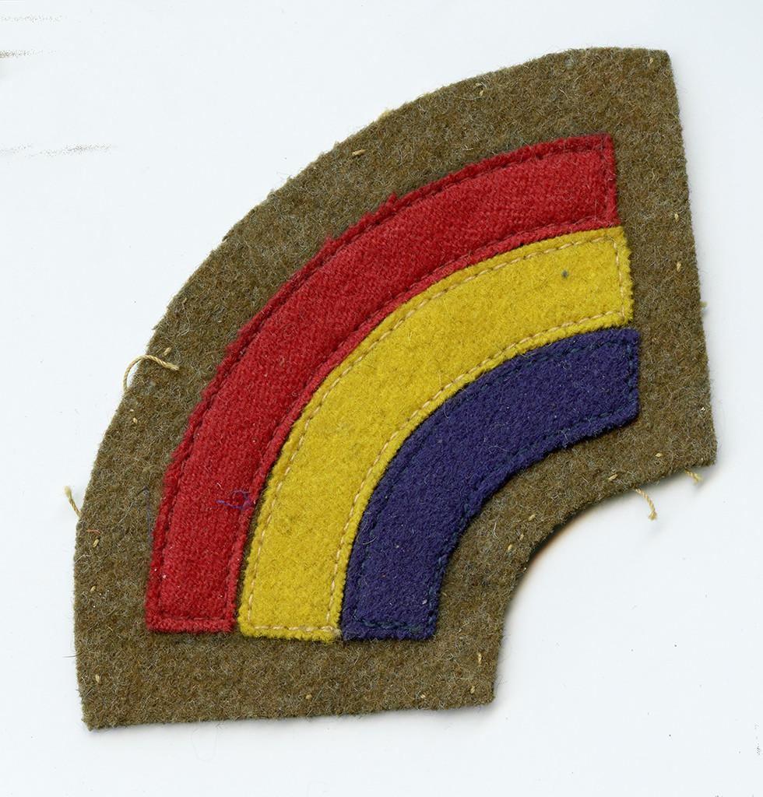
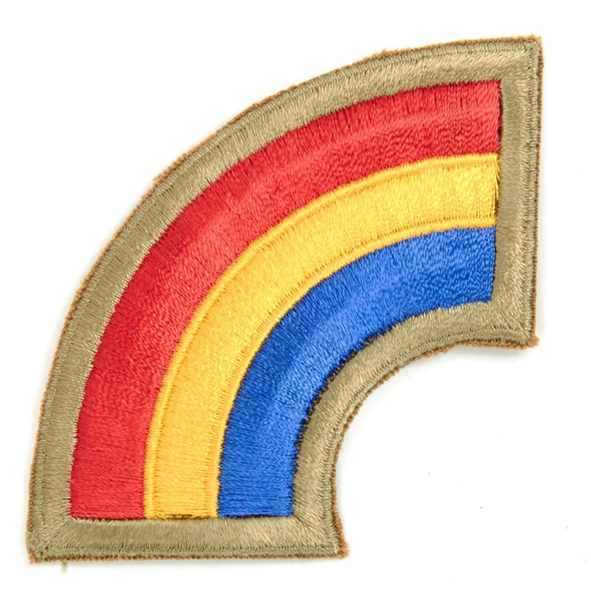
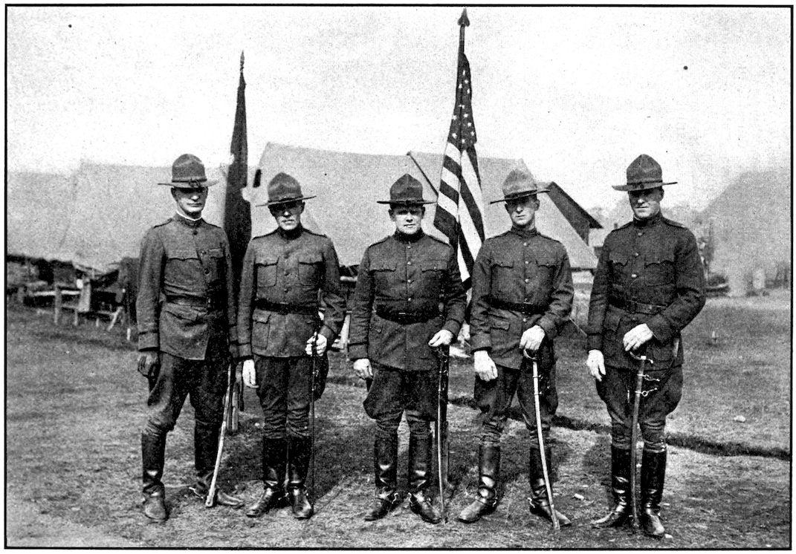
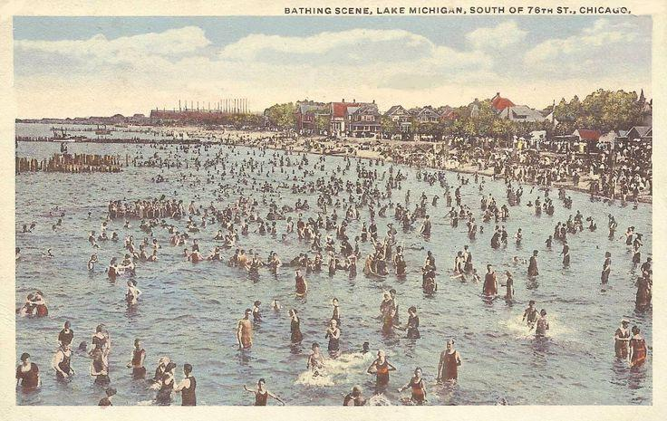
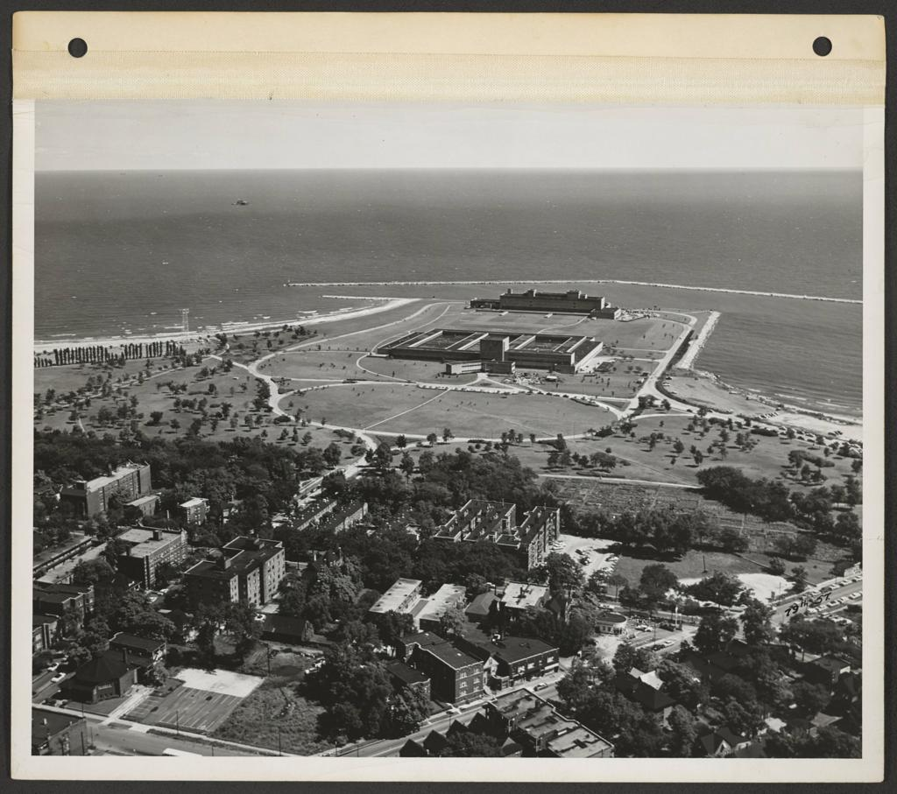
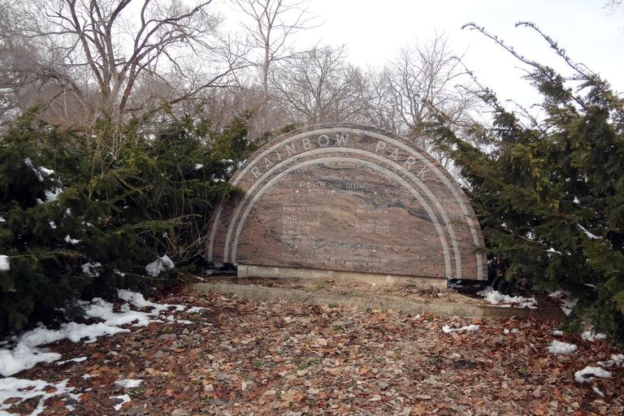
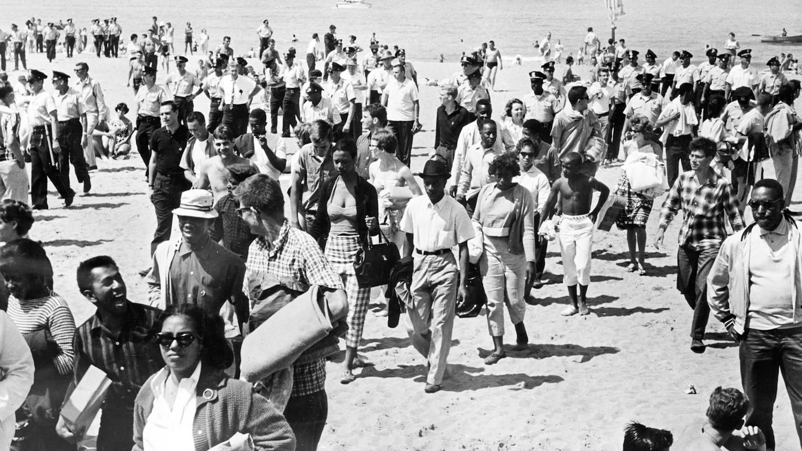
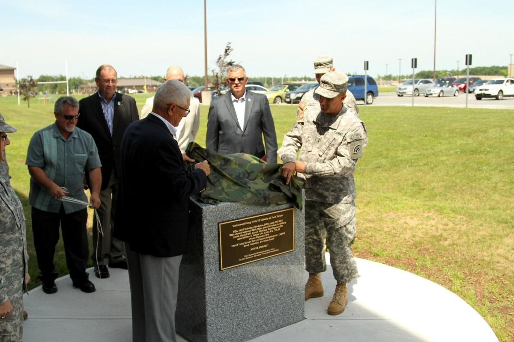
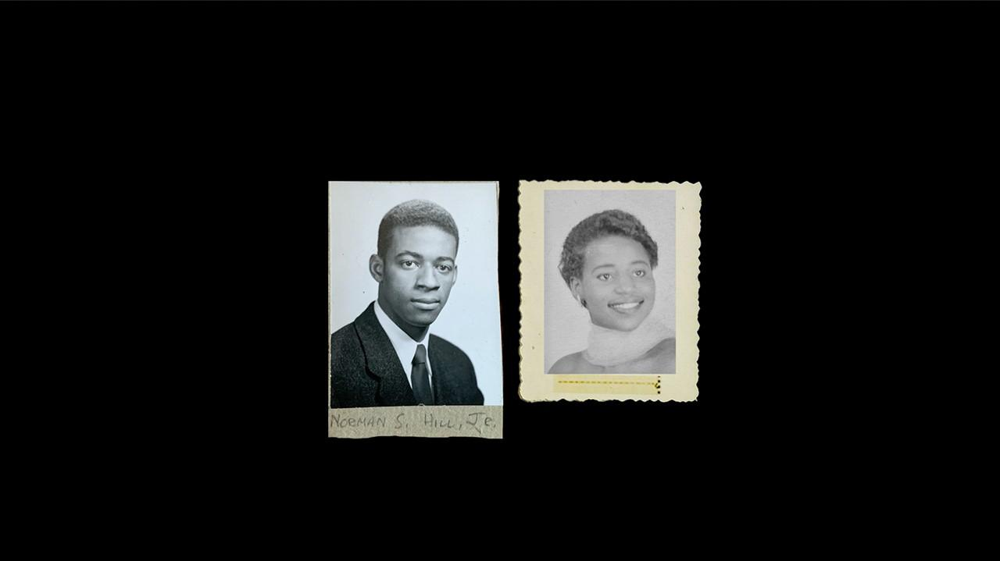

An annual celebration at Rainbow Beach honoring the 42nd Infantry Division, the Rainbow Division for which the beach was named in 1918. Veterans, families, public servants and neighbors, together on the shore that carries the name.
Honor the history. Celebrate the people. Preserve the Legacy.

The name
The 42nd Infantry Division was organized in 1917 from National Guard units of 26 states and the District of Columbia. Its Rainbow name spoke to that spread, from one end of the country to the other. In 1918 the Chicago City Council gave the same name to this beach.



From a rocky ledge to a name that means something
- 1908
Rocky Ledge Beach opens at 79th Street as a municipal beach.
- 1914
The City begins expanding the beach, acquiring land from 75th Street to Rocky Ledge.
- 1917
The 42nd Infantry Division is organized from National Guard units of 26 states and Washington, D.C.
- 1918
The City Council officially names the site Rainbow Beach, in honor of the division.
- 1959
The two beaches are consolidated, and the Chicago Park District begins leasing the site from the City.
- 1960–61
Young people wade in to challenge the beach’s unwritten color line.
- 1967
Division veterans install a granite memorial with a bronze plaque.
- 1999
A new fieldhouse opens on the portion of the park transferred to the Park District in 1998.
Source: Chicago Park District, Rainbow Beach Park and Rainbow Division memorial.



1960–61: the wade-ins
Chicago’s beaches were not segregated by law, but white beachgoers treated Rainbow Beach as their own. On August 29, 1960, a breakaway NAACP Youth Council, with Velma Murphy and Norman Hill among them, came to “wade in to freedom.” The wade-ins went on, week after week, through two summers, until the beach’s de facto segregation ended.
We hold the Legacy on the anniversary of that first wade-in, so one day, at one shore, honors both service to the country and the fight to make its promise real.

Scholarship: Nicholas Juravich, “The Freedom Waders.”
The day
Six parts, one celebration, on the lawn beside the memorial.
Veterans Recognition Ceremony
Veterans of every branch and generation, honored together with their families.
42nd Division Commemoration
The story of the Rainbow Division and the naming of the beach, told at the memorial.
Memorial Tribute
A quiet moment for those who served and those who did not come home.
Living History Exhibition
Photographs, artifacts and oral histories, from 1917 through the wade-ins.
Music & Culture
Jazz, blues, gospel, soul and reggae on the lakefront.
Community Appreciation
Food, family activities, and veterans’ organizations meeting their neighbors.

The Chicago Park District’s Rainbow Division memorial is the center of the commemoration, subject to Park District authorization. Times and program are set with the Park District.
Duty, honor, country. Those three hallowed words reverently dictate what you ought to be, what you can be, what you will be.General Douglas MacArthur · West Point, 1962
The day, hour by hour
Three movements, from the quiet of the morning to the sunset flag to the dance floor by the lake.
The Parade of the States
At the Posting of the Colors, 26 state flags and the flag of the District of Columbia cross the lawn, carried by veterans, young people and descendants, and form a rainbow arc at the memorial. That is what the name meant in 1917.
- 10:00 AM
Gates open DJ
The exhibition opens and veterans check in. A soft, curated DJ set plays low.
- 10:45 AM
Seating and prelude
Veterans and families are seated, veterans in the front rows.
- 11:00 AM
Posting of the Colors and Parade of the States Ceremony
The color guard posts the national flag and the Rainbow Division flag. Then the 26 state flags and D.C. cross the lawn. The national anthem is sung by a local vocalist.
- 11:15 AM
Welcome and the Naming Ceremony
A welcome to all, and the story of how the division gave the beach its name.
- 11:25 AM
Our public partners Ceremony
The Chicago Park District, the City, elected officials and the State, five minutes each.
- 11:45 AM
Duty, Honor, Country Theater
A MacArthur excerpt, read by an actor or a veteran.
- 11:55 AM
The Wade-Ins Ceremony
A reading, a historian or descendant, and a young voice, telling 1960–61 at the same shore.
- 12:10 PM
Veterans recognized
Each branch and era stands and is thanked.
- 12:20 PM
Memorial Tribute Silence
A wreath at the Rainbow Division memorial, Taps, and a moment of silence. No amplified music until it ends.
- 12:30 PM
Gospel set DJ
Our gospel DJs open the afternoon. Guest vocalists or a choir may join for live moments.
- 1:30 PM
Theater Theater
A short staged piece on 1917 and 1960, with local actors, in a tent or pavilion.
- 2:30 PM
DJ Lab youth showcase DJ
Our young DJs, the Rainbow Beach headliners of tomorrow, take the decks.
- 3:30 PM
Jazz and blues DJ
Our DJs spin jazz and blues, from the standards to the deep cuts.
- 4:15 PM
Spoken word and poetry Artists
Veterans’ voices, wade-in voices and young poets.
- All afternoon
Food, family and the exhibition Community
Food vendors, family activities, veterans’ organization tables and the Living History Exhibition.
- 5:00 PM
Soul set DJ
The lawn fills as the light turns gold.
- 6:00 PM
Walk to the Water Ceremony
Veterans and wade-in descendants walk together to the shore, where the story of 1960 began.
- ~7:15 PM
Evening Colors Ceremony
At sunset the flag is lowered and a bugler plays. A military tradition, and the emotional peak of the day.
- 7:30 PM
Reggae set DJ
The SelassieFest tie-in, as the sky goes dark over the lake.
- 8:45 PM
Women DJs DJ
A showcase set from our women DJs.
- 9:45 PM
Closing set and finale DJ
The whole day, one last time on the decks.
- 10:30 PM
Last song
A final word from the stage, then thanks.
- 11:00 PM
Park closes
The grounds are cleared and struck.
Proposed program, subject to Chicago Park District approval. Park hours, sunset time and sound limits to be confirmed. Artists, actors and DJs will be named as they confirm.
The grounds
Memorial Lawn
The ceremony, the color guard, the wreath and Evening Colors.
Main Stage
Gospel, jazz, soul, reggae and the youth DJ showcase.
Theater Pavilion
Staged readings, poetry and spoken word.
Living History
Photographs, artifacts and oral histories, 1917 to 1960.
DJ Lab Booth
Open decks and the youth showcase.
Community Row
Food, families and veterans’ organizations.
An invitation to our public partners
We will organize and produce the day. We are asking four partners to make it official.
To the Chicago Park District
This is your beach, and your memorial. We ask for your permission and your partnership.
- Permission to hold The Rainbow Legacy at Rainbow Park on Sunday, August 29, 2027.
- Access to the Rainbow Division memorial for the commemoration.
- A named contact on your staff to plan the day with us.
To the City of Chicago
The City Council named this beach in 1918. Help us keep that name alive.
- A mayoral proclamation naming August 29 as the day of The Rainbow Legacy.
- Support from the Mayor’s Office and city departments for permits and public listing.
- A city official to speak at the Veterans Recognition Ceremony.
To our elected representatives
The aldermen, state legislators and members of Congress who serve the South Side: stand with the veterans you represent.
- Join as a founding partner, with your office named among them.
- Present a resolution or proclamation at the ceremony.
- Send a letter of support to the Park District and invite the veterans in your district.
To the State of Illinois
The Rainbow Division was built from National Guard units across the country. We invite Illinois to honor it here.
- Recognition from the Governor and the Illinois Department of Veterans’ Affairs, including a state proclamation.
- The Illinois National Guard invited to take part, such as a color guard.
- A representative of the State to join the Veterans Recognition Ceremony.
Let’s honor the history, celebrate the people, and preserve the Rainbow Legacy.
For veterans and families
Every veteran is welcome, from any branch and any era. You do not need a link to the 42nd Division.
Be recognized
Tell us you are coming and we will welcome you by name, if you would like.
I am a veteranShare a story
Photographs, letters and memories of service, yours or a loved one’s, for the exhibition. You choose what is shared.
Share with usBring your post
Veterans’ organizations are invited to host a table and meet the community.
Join as an organization
We are also gathering the living memory of the 1960–61 wade-ins. If you or your family were there, we would be honored to hear from you.
Questions
Is it free?
That is the plan. We intend the celebration to be free and open to the public. Details will be confirmed with the Park District.
Is this the Park District’s Veterans Day event?
No. It is a separate annual celebration, built on the history of Rainbow Beach. It needs Chicago Park District approval before it is final.
Do I need to have served in the 42nd Division?
No. The division gave the beach its name, and the day honors all veterans. Descendants of Rainbow Division soldiers are especially welcome to share what they know.
Why August 29?
It is the anniversary of the first wade-in at Rainbow Beach in 1960, and it falls in beach season, so the memorial, the lake and the lawn can all be part of the day.
Who is hosting?
The nonprofit behind SelassieFest, with veterans’ organizations and public partners. Partners are named here once they confirm.